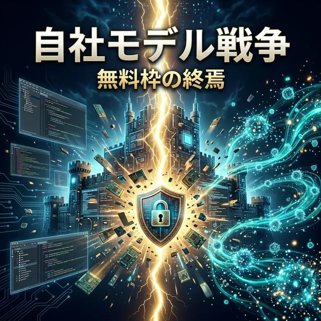

⚡ 自社モデル戦争の幕開け — LAB第6回レポート：Cursor Composer 2・Gemini CLI有料化・GPT-5.4 mini/nano

LABセクション第5回を公開しました。今回のテーマは「自社モデル戦争と無料枠の終焉」。AI開発ツール、OSSエージェント、業界トレンドの3つの視点から、2026年3月16日〜21日の動きをまとめます。
⚡ 今週の3大ニュース
① Cursor Composer 2 — Anysphereが自社コーディングモデルを発表。IDEメーカーが独自LLMを持つ時代が始まった。100万DAU突破、$50B評価額の交渉が進行中。
② Gemini CLI有料化 — 3月25日から無料ユーザーはFlashモデルのみに。Proモデルは有料サブスク必須。「無料最強」の地位に終止符。
③ GPT-5.4 mini/nano — 3月18日発表の軽量モデル。エージェントの裏側処理を劇的に効率化し、OSSツールのBYOK運用で月$15-20の本格AI開発が可能に。
🛠️ AI開発ツール比較 — 5ツールの最新動向
| ツール | 主なアップデート | 課題 |
|---|---|---|
| Antigravity | CLI有料化（3/25〜）、Mac版Desktop Intelligence開発中 | 無料枠縮小で「無料最強」の看板を下ろす |
| Claude Code | auto-plan/auto-memory/voice mode、Channels（Discord/Telegram） | 3/17パフォーマンス低下報告、シークレット漏洩2倍 |
| Cursor | Composer 2自社モデル、100万DAU、JetBrains ACP対応 | ロックイン懸念、コスト問題継続 |
| Copilot | GPT-5.3-Codex LTS、セマンティック検索、Agent 50%高速化 | Student Plan制限、愛され率9% |
| Windsurf | OpenAI Astral買収の影響 | 差別化がさらに困難に |
詳細は AI開発ツール比較 第5回 をご覧ください。
👤 OSSエージェント — 進化する自律性
| プロジェクト | Stars | 注目アップデート |
|---|---|---|
| OpenHands | ~69,400 | Planning Agent搭載、Task Listタブ、Claude Opus 4.6対応 |
| Cline | ~59,200 | 500万インストール突破、CoreWeave W&B Inference統合 |
| Roo Code | ~22,800 | v3.51.0 GPT-5.4/Gemini 3.1 Pro対応、スラッシュコマンド |
新規トピックとしてGPT-5.4 mini/nano（軽量モデルでBYOKコスト激減）とClaude Code Channels（Discord/Telegram統合の商用ツール）を取り上げました。
詳細は AI開発者ピックアップ 第5回 をご覧ください。
📊 6つのトレンド
| # | トレンド | インパクト |
|---|---|---|
| 01 | 自社モデル戦争 | Cursor Composer 2で「IDE×自社LLM」時代。BYOKの自由 vs 統合体験 |
| 02 | Gemini CLI有料化 | 3/25から無料枠縮小。無料ユーザーの流出リスク |
| 03 | GPT-5.4 mini/nano | 軽量モデル量産化。エージェントの裏側処理で費用激減 |
| 04 | AIシークレット漏洩 | 34%増加。AI生成コードのpush前チェックが必須に |
| 05 | Anthropic vs Pentagon | AI倫理と国防の正面衝突。マルチツール戦略の重要性 |
| 06 | マルチモーダルAI $3.43B | テキスト・音声・画像・動画の統合処理が主流に |
詳細は AI開発トレンド 第5回 をご覧ください。
🔐 セキュリティ警告：AI生成コードのシークレット漏洩
GitHub公開コミットでのシークレット漏洩が前年比34%増加。Claude Codeで共同著作されたコミットはベースラインの2倍のリスク。対策としてプレコミットフック、.gitignore/.env分離、GitHub Push Protectionの有効化を強く推奨します。
🎯 今週の結論
「どのモデルを使うか」から「どのエコシステムに入るか」に問いが変わった1週間。
- コスパ最強: Claude Code $20/月（auto-plan + voice mode + サーチャージなし）
- 統合体験重視: Cursor Pro + Composer 2（自社モデルの最適化体験）
- 無料で最大限: Copilot Free → OSS + GPT-5.4 mini BYOK
- エコシステム最広: Antigravity / Gemini（Workspace + Apple + Samsung）
当サイトは引き続きAntigravityで開発中。次回LAB第6回もお楽しみに！
LAB第5回の全ページ: